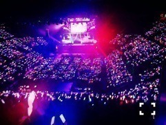

| 2014/12 18 Thu | 妄想構成作家。618回目 |
クリスマスライブ
無事終了しました！
12月12日
アンダーライブ
2ndseasonファイナル
in有明コロシアム！
1年前は想像もしてなかった
景色が広がっていました。
23人だけに向けられた
8000人の声援、ペンライト。
見てるものすべてが
信じられなかったです。
8th特典ライブ
9th10公演、10th18公演を
がむしゃらに駆け抜けてきて
乃木坂の4人から本音を言って
自分勝手に泣いていた頃より
少しは変わったと思ってる。
自分自身も、メンバーみんなも。
メイン企画は全員センター。
くじ引きで自分が引いた曲の
センターを務めるという新しい企画。
私は扇風機でした！
どうなるのかなと思ってたら
自分の色を存分に発揮できる
最高の企画だと思いました。
それぞれ引いた曲にみんな合っていた
のかなとも思ったけど、そうじゃなく
オリジナリティーに溢れていて
これは見てて絶対飽きないだろうな
と思った！踊ってて楽しかった！
スタッフさんの、
メンバーの優しさに
たくさん助けられました。
みんなでモニターがある！
って感激してました。
最後に紫色の景色を見て
感動しました。
ファイナルを終えて、
ここで終わるわけにはいかない
と改めて思いました。
あの景色を見たからこそです。

このメンバーと
この広いステージに立てたことは
絶対に忘れません。
ライブ前日で忙しい中
選抜メンバーも来てくれました！
みんなありがとう。

12月13日.14日
Merry X'mas Show 2014
カップリングベスト30を
1公演につき、10曲を
ランキングで披露していくかたち。
惜しくもアルバムには
入れなかったけど、
生まれたままで
狼に口笛を
左胸の勇気などがランクイン
初日はスカパー！生放送でした。
生まれたままで踊れてよかった
千秋楽にはベスト10を披露！
自分が歌った曲が
たくさんランクインしました...
8位 13日の金曜日
6位 世界で一番 孤独なLover
6位 世界で一番 孤独なLover
7位 あの日僕は咄嗟に嘘をついた
最新曲のアンダー曲が
こんな上位に入るとは
思いませんでした！
認められた気がして嬉しい。
この曲はアンダーライブでの
思い出の曲です。
MVと一緒にぜひ聴いてください。
4位 涙がまだ悲しみだった頃
これは3rdの曲で、
私は歌っていないのですが
この日寧々のアンダーを務めました。
3rdアンダーにとって大切な曲で
あることは重々承知していました。
だから、いくら私が寧々と
仲が良いからといって
このポジションに
入っていいのだろうかという
気持ちもありました。
でも、曲が始まる直前飛鳥に
背中を押されたことで
気持ちが軽くなりました！
一生大事にされる曲だと思うし、
寧々が歌ってたときの
雰囲気を忘れないように
今後また歌う機会があれば、
優しく歌いたいです。
1位 他の星から
まさか自分が歌ってる曲が
1位になるとは思いませんでした。
私にとって初めてのユニット曲。
紀の善であんみつ食べられれば
それ以上の贅沢は望まない

他の星からメンバーとあんみつ
栗あんみついただいた
紀の善さんありがとうございました。
1位になったことによって、
より思い入れ深いものになりました。
こんなにたくさんの方に
愛されてる曲なんだと思ったら
嬉しくてしょうがないです。
このメンバーにはいろんな分野で
刺激を受けてます。
そんな中に最年少でいれる私は
幸せです。だいすきなメンバー！
このメンバーで
僕が行かなきゃ誰が行くんだ？
という曲も歌ってるので、
そちらもぜひ聴いてみてくださいね

この衣装お気に入り
今日はニコ生「推しメン会議」
がありました！

七瀬、中田、ちはる、万理華
この4人で新星堂さんを
応援します！！
クイズ大会で1位になれず、
ポイントゲットを逃しましたが、
2位になりました〜
売り上げ伸ばすぞー！
新星堂さんよろしくお願いします！
...
おとといある撮影をしました...
楽しすぎました。
のぎ天釣りサークル前半見てね〜
テンション高いよー
まりか
コメント(673)
2014/12/18 22:30